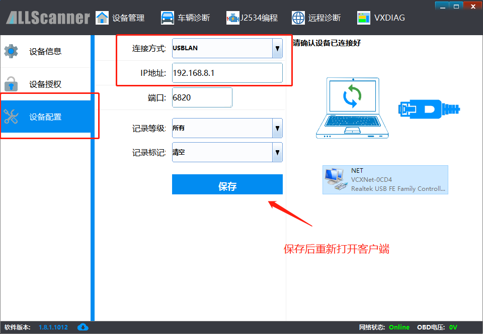
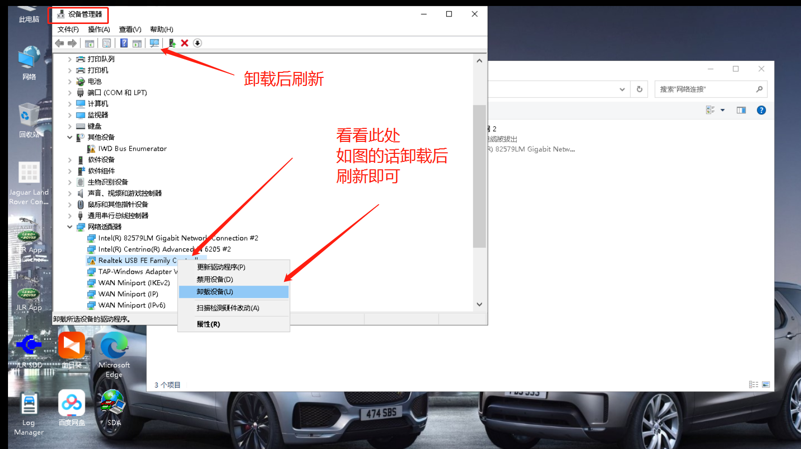
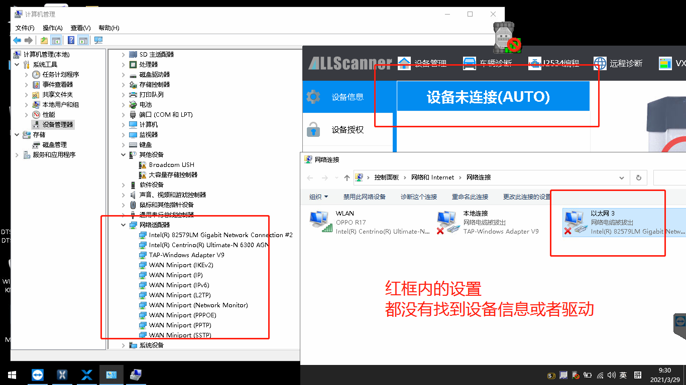
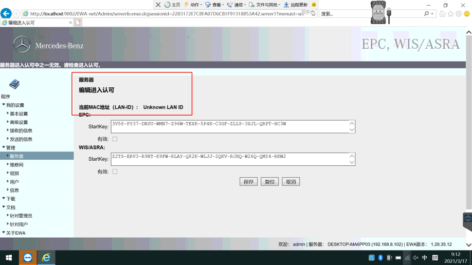
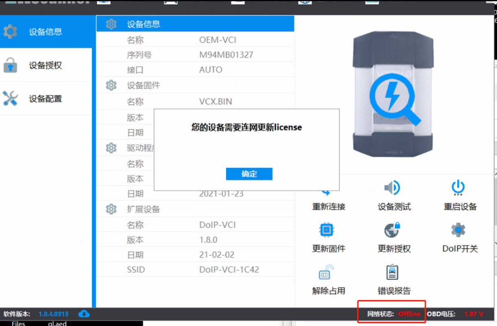
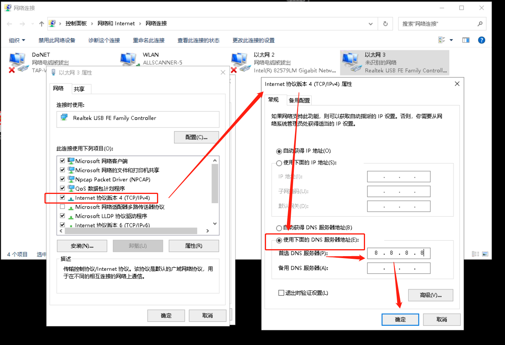

1.Erro de Arranque do VCI Manager — ErrorCode = 1450
Descrição:
VX Mananger Instalação ConcluídaErro ao iniciar após：”ERROR: Loadlibrary(M-Auto VCI.dll) ErrorCode = 1450“。
Solução
Desinstale e reinstale o VCI Manager.
2.O Dispositivo Está Ligado mas o VCI Manager Não o Detecta
Descrição do problema
DispositivoUSBligado ao computador mas o clienteVCI ManagerencontrarnãoparaDispositivo，AbraRedeAdaptadorPáginaencontradoDispositivoLigação，enquantoeDispositivoIPcorrectoconfirm（192.168.8.* **）

Passo 1: Verificar que o adaptador de rede detecta o dispositivo

Passo 2: Confirmar que o IP do dispositivo está correcto (192.168.8.*) — seleccionar "Obter IP automaticamente"

Solução：
Solução 1: Altere o modo de ligação para USBLAN.

②.SeClientedefiniçõesparaUSBLANtambémésemligaracimaDispositivo，pleaseAbracomputadorGestão de Dispositivos，verificarRedeAdaptadoremDispositivoplaca de redeDriverése anormal（Como mostrado），se anormal por favorDesinstalarEsteplaca de redeapósemGestão de DispositivosdentroActualizeentãopodepara。

③.Seplaca de rede，ClienteeGestão de DispositivosallsemencontrarparaDispositivo，pleasevercomputadorWIFILigaçãoése existeDispositivoWIFIsinalnúmero“DOIP-VCI-****”,semmeansDispositivodevolver para reparação。

3.Mercedes-Benz WIS Não Regista
Descrição:Ao tentar registar o WIS, não há Hardware ID.

Solução：thiséWISalreadyjáemdiferentescomputadorNotaregistar，oucopiardisco rígidonãocompleto，re-copiardisco rígido。
4. GM GDS2 Sem Data de Licença Após Instalação
Descrição:GM GDS2 Sem Data de Licença Após Instalação；encontrarnãoparaDispositivo；testarnãoveículo。
Solução：pleasepedir ao clienteverificartheirSistema，EsteSoftwarepatch/cracknãoSuporteHome editionVersãoWINDOWS！Windows home.Instale numa versão diferente. O Tech2win apenas suportaWin7 32bitpara instalação e utilização.

5.VCI Manager Client OFFLINE
Descrição:O VCI Manager está OFFLINE sem acesso à Internet, não consegue instalar drivers nem actualizar licenças.

Solução：
①AbraRedeLigaçãoMenu，encontrarparaDispositivoligarparaplaca de rede，Como mostradocaixa vermelha：

②Duplocliqueplaca de rede，cliquepertencecapacidade，encontrarparaIPV4，cliqueabrir（Como mostrado）：

③alterar manualmente DNS IPpara8.8.8.8（Como mostrado），cliqueConfirmeentãopodepara。

Notas：SepressionaracimacoberturaMétodoajustarapóstambéméClienteOffLine,entãosubstituircomputadorRedetentar novamente。
6.
Descrição:
Solução：
7.
Descrição:
Solução：
8.
Descrição:
Solução：